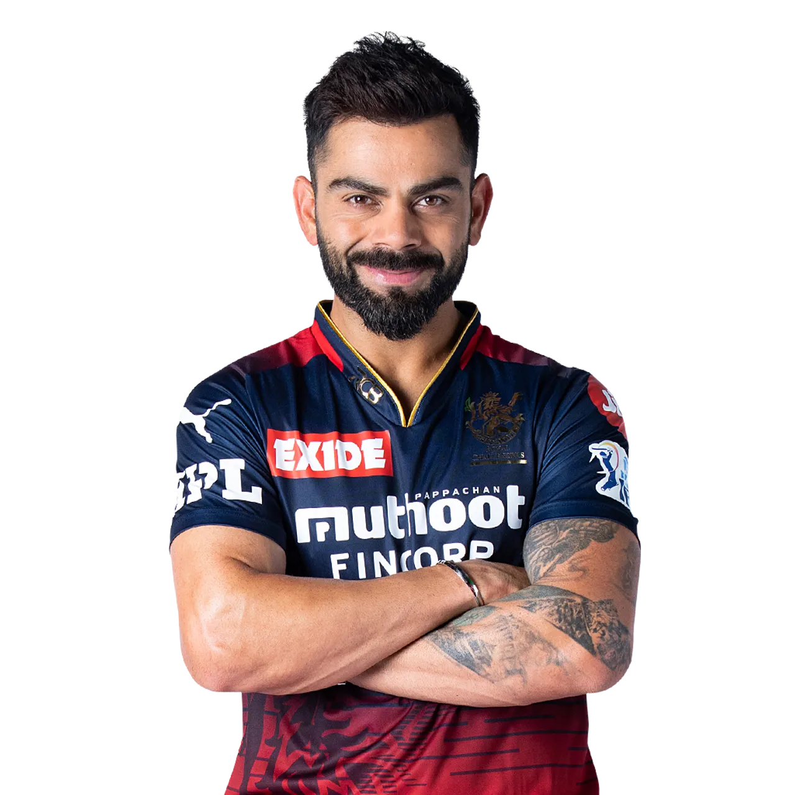
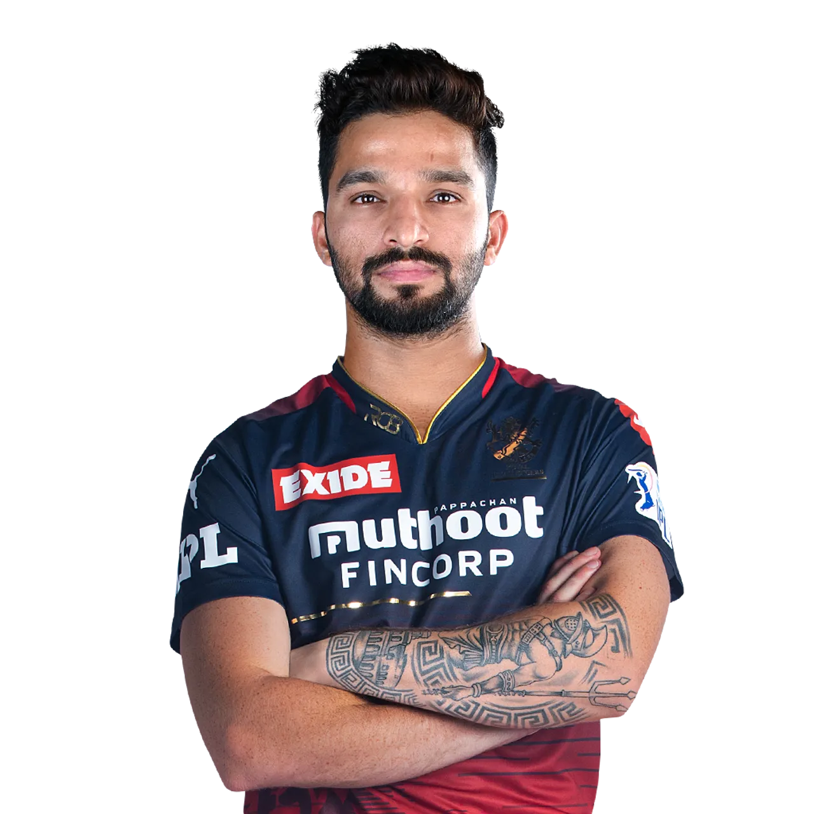
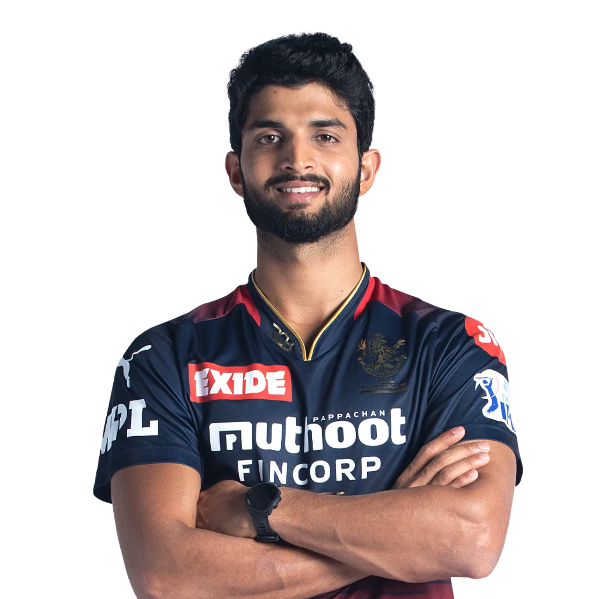

𝐑𝐎𝐘𝐀𝐋 𝐂𝐇𝐀𝐋𝐋𝐄𝐍𝐆𝐄𝐑𝐒 𝐁𝐀𝐍𝐆𝐀𝐋𝐎𝐑𝐄
Royal Challengers Bangalore are a franchise cricket team based in Bangalore, Karnataka, that plays in the Indian Premier League. It was founded in 2008 by United Spirits and named after the company's liquor brand Royal Challenge.
The Royal Challengers have not won the IPL but finished runners-up on three occasions between 2009 and 2016. Their lack of success over the years despite the presence of various notable players has earned them the tag of "underachievers".The team holds the records of both the highest and the lowest totals in the IPL – 263/5 and 49 respectively.
In September 2007, the Board of Control for Cricket in India (BCCI) announced the establishment of the Indian Premier League, a Twenty20 competition to be started in 2008.The teams for the competition, representing 8 different cities of India, including Bangalore, were put up on auction in Mumbai on 20 February 2008. The Bangalore franchise was purchased by Vijay Mallya, who paid US$111.6 million for it. This was the second highest bid for a team, next only to Reliance Industries' bid of US$111.9 million for the Mumbai Indians. The brand value of Royal Challengers Bangalore was estimated to be ₹595 crore (US$75 million) in 2019.
Royal Challengers Bangalore have active rivalries with Chennai Super Kings and Kolkata Knight Riders. The rivalry with Knight Riders goes back to 2008 as it was also the inaugural match of the first IPL. The rivalry with Chennai Super Kings stems from the Kaveri River water dispute between the states of Karnataka and Tamil Nadu. The rivalry is also called "Kaveri derby" and "South Indian derby".The Super Kings beat the Royal Challengers in the final of the 2011 IPL, the only meeting between the two teams at an IPL final. Another notable rivalry between RCB is with the Hyderabad franchise, first with Deccan Chargers and now with Sunrisers Hyderabad. The clashes between Bangalore and Hyderabad have been intense with the latter ultimately dominating the former. The 2009 IPL final and the 2016 IPL final were both won by a Hyderabad franchise against RCB. Their latest clash was also at a high stake eliminator, where a fifty by Kane Williamson trumped RCB to knock them out of IPL 2020. Deccan Chargers had won 6 out of the 11 clashes between the two and Sunrisers currently lead by 10 games to the 7 games that were won by RCB.
The Royal Challengers have a huge and passionate fan base all over India and especially in the city of Bangalore. The fans, known to be loyal and vocal in their support,often turn up in large numbers for RCB's home matches turning the stadium into what is called a "sea of red".They are well known for their chants of "R-C-B, R-C-B" and chants of "A-B-D, A-B-D" for their maestro batsman AB de Villiers,and the co-ordinated Mexican wave at the Chinnaswamy.The stadium organisers also provide the home team fans with cheer kits, RCB flags and noisemakers among other items.Royal Challengers Bangalore have formed a fan-following group named as Bold Army. During the 2014 IPL, the Royal Challengers became the first team to provide free Wi-Fi connectivity to fans at their home ground. 50 access points were set up using fibre optic cables to provide the connectivity to fans on match days at the Chinnaswamy.
Current Squad
|  VIRAT KOHLI |
 FAF DU PLESSIS |
 RAJAT PATIDAR |
 GLENN MAXWELL |
 DINESH KARTHIK |
 MAHIPAL LAMROR |
 SHAHBAZ AHMED |
 WANINDU HASARANGA |
HARSHAL PATEL |
 MOHAMMED SIRAJ |
 JOSH HAZLEWOOD |
DAVID WILLEY |
 ANUJ RAWAT |
KARN SHARMA |
 SIDDARTH KAUL |
AKASH DEEP |
|  SUYASH PRABHUDESSAI |
 SHERFANE RUTHERFORD |
 FINN ALLEN |
 ANEESHWAR GAUTAM |